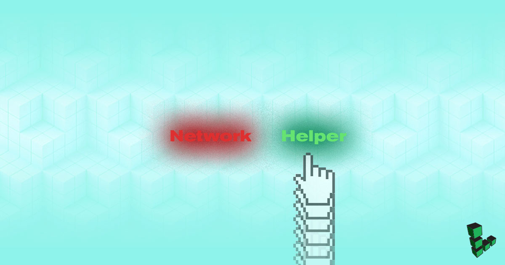
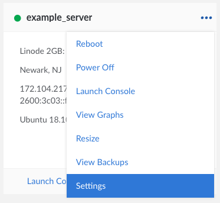

Network Helper
Updated by Linode Written by Linode

What is Network Helper?
Network Helper is a host-side service which automatically sets a static IPv4 address and gateway for your Linode. This means you do not need to manually reconfigure your Linode’s network addressing when you:
- Deploy a Linode
- Add a public or private IPv4 address
- Restore from a backup
- Migrate your Linode to a new data center
- Clone from another Linode
Network Helper is enabled by default, and works by detecting which distribution is booting and then modifying the appropriate network configuration files. If Network Helper is unable to determine the operating system during boot, or if you boot an unsupported operating system, Network Helper will not attempt to write any new configuration files. Be aware that Network Helper configures only IPv4 addressing; your Linode’s IPv6 address is assigned by SLAAC.
CautionIf you instead choose to manually configure your Linode’s network interface settings, be the IPv4 or IPv6, you must disable Network Helper for that Linode or your configuration will overwritten during the next boot.
Network Helper Settings
Network Helper can be enabled or disabled globally for your account, or on a per-Linode basis. Network Helper can still be toggled on and off for specific Linodes, regardless of whether enabled or disabled globally.
Global
When Network Helper is enabled globally, all new Linodes created on your account will have Network Helper enabled by default.
Click on Account in the sidebar of the Linode Cloud Manager.
Click on the Global Settings tab. Set the switch under the Network Helper section to the desired setting. Blue is enabled, gray is disabled.
Click the Save button.
{kind=link}
Single (Per-Linode)
Click on Linodes link in the sidebar of the Linode Cloud Manager.
Click on the more options ellipsis for the Linode for which you want to enable Network Helper. Then, click Settings.

In the Advanced Configurations panel, click on the more options ellipsis for your Disk Profile. From the menu, select Edit:
A menu will appear with that configuration profile’s settings. Under the Filesystem/Boot Helpers section, toggle the Auto-configure networking switch to the desired setting. Blue is enabled, gray is disabled.
Click Submit.
{kind=link}
{kind=link}
What Files are Modified
The specific files Network Helper modifies varies by distribution.
Arch
Network Helper configures /etc/systemd/network/05-eth0.network.
CentOS & Fedora
Network Helper configures /etc/sysconfig/network-scripts/ifcfg-eth0.
Debian & Ubuntu
Network helper configures /etc/network/interfaces and /etc/resolv.conf.
Gentoo
Network Helper configures /etc/conf.d/net and /etc/resolv.conf.
OpenSUSE
Network Helper configures /etc/sysconfig/network/ifcfg-eth0, /etc/sysconfig/network/routes and /etc/resolv.conf.
Slackware
Network Helper configures /etc/rc.d/rc.inet1.conf and /etc/resolv.conf.
What is Modified in Those Files
Below are example network configuration files for a Debian 9 Linode with Network Helper enabled:
- /etc/network/interfaces
-
1 2 3 4 5 6 7 8 9 10 11 12 13 14 15 16 17 18 19 20 21 22 23 24 25 26 27 28# Generated by Linode Network Helper # Wed Jan 9 21:30:02 2019 UTC # # This file is automatically generated on each boot with your Linode's # current network configuration. If you need to modify this file, please # first disable the 'Auto-configure Networking' setting within your Linode's # configuration profile: # - https://manager.linode.com/linodes/config/lin1?id=13561415 # # For more information on Network Helper: # - https://www.linode.com/docs/platform/network-helper # # A backup of the previous config is at /etc/network/.interfaces.linode-last # A backup of the original config is at /etc/network/.interfaces.linode-orig # # /etc/network/interfaces auto lo iface lo inet loopback auto eth0 allow-hotplug eth0 iface eth0 inet6 auto iface eth0 inet static address 203.0.113.5/24 gateway 203.0.113.1
- /etc/resolv.conf
-
1 2 3 4 5 6 7 8 9 10 11 12 13 14 15 16 17 18 19 20 21 22 23 24 25 26 27# Generated by Linode Network Helper # Wed Jan 9 21:30:02 2019 UTC # # This file is automatically generated on each boot with your Linode's # current network configuration. If you need to modify this file, please # first disable the 'Auto-configure Networking' setting within your Linode's # configuration profile: # - https://manager.linode.com/linodes/config/lin1?id=13561415 # # For more information on Network Helper: # - https://www.linode.com/docs/platform/network-helper # # A backup of the previous config is at /etc/.resolv.conf.linode-last # A backup of the original config is at /etc/.resolv.conf.linode-orig # domain members.linode.com search members.linode.com nameserver 66.228.53.5 nameserver 96.126.122.5 nameserver 96.126.124.5 nameserver 96.126.127.5 nameserver 198.58.107.5 nameserver 198.58.111.5 nameserver 23.239.24.5 nameserver 173.255.199.5 nameserver 72.14.179.5 nameserver 72.14.188.5
In addition to network interface file file (again, specific to this Debian example), Network Helper will create:
A copy of the interface and resolver file as the distribution provided it:
.interfaces.linode-origand/etc/.resolv.conf.linode-orig. Note that Network Helper does not modify/etc/resolv.confon all of our distributions.A copy of the interface and resolver files from the previous boot:
.interfaces.linode-lastand/etc/.resolv.conf.linode-last. If you manually changed either of these file before the previous boot, you’ll find them saved there.
Use the following command to restore manual changes made before the previous reboot. Be sure to replace /etc/network/interfaces with the network interface file for your distribution from above.
mv /etc/network/.interfaces.linode-last /etc/network/interfaces
Join our Community
Find answers, ask questions, and help others.
The Linode Classic ManagerIf you're using the Linode Classic Manager instead of the new Cloud Manager, you can still view the Classic Manager version of this Network Helper guide.
This guide is published under a CC BY-ND 4.0 license.